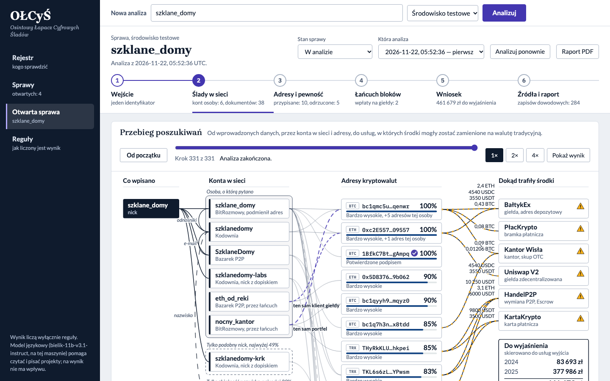
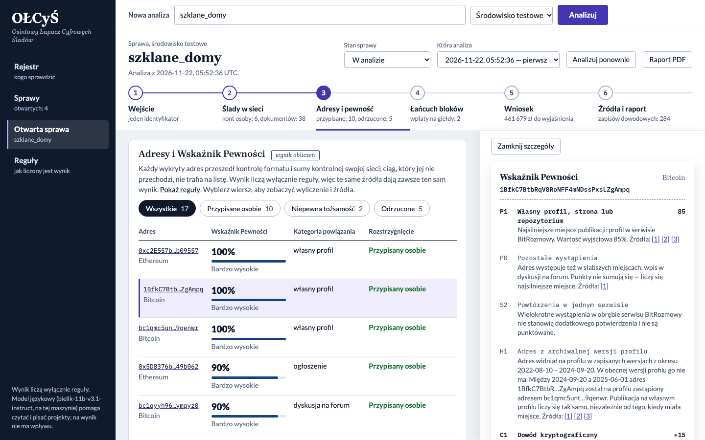
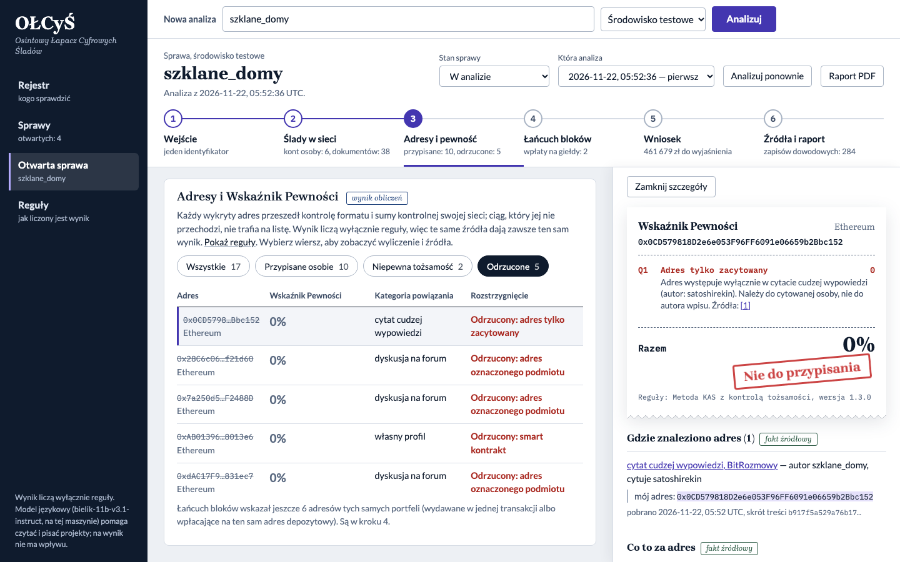
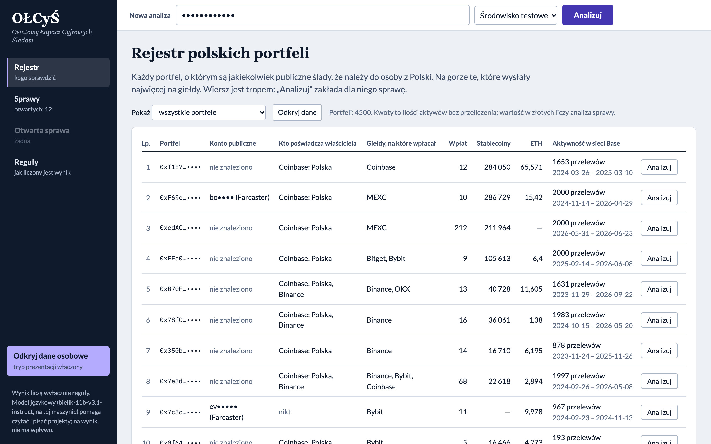
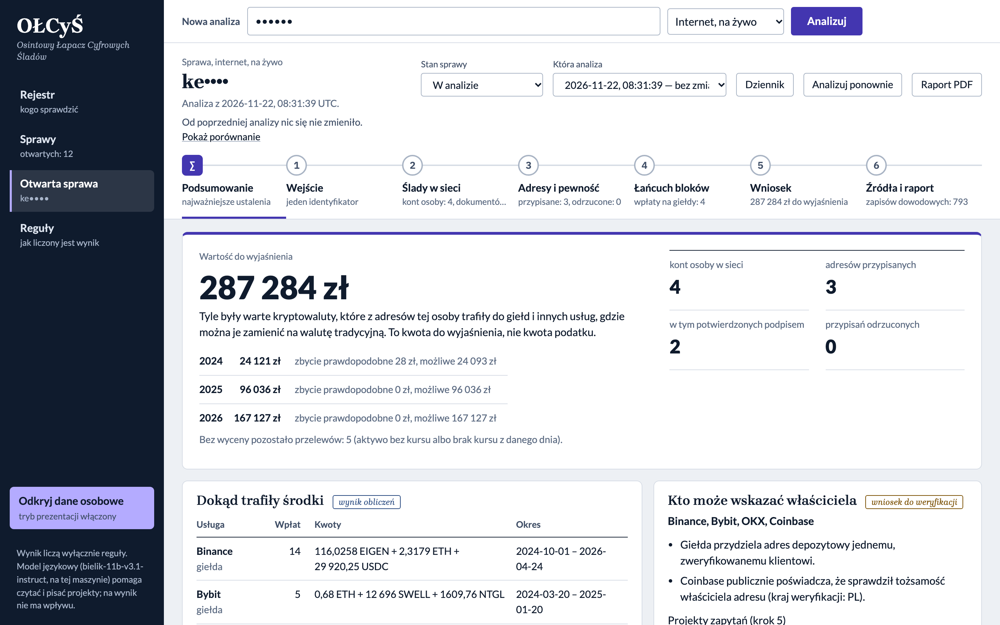
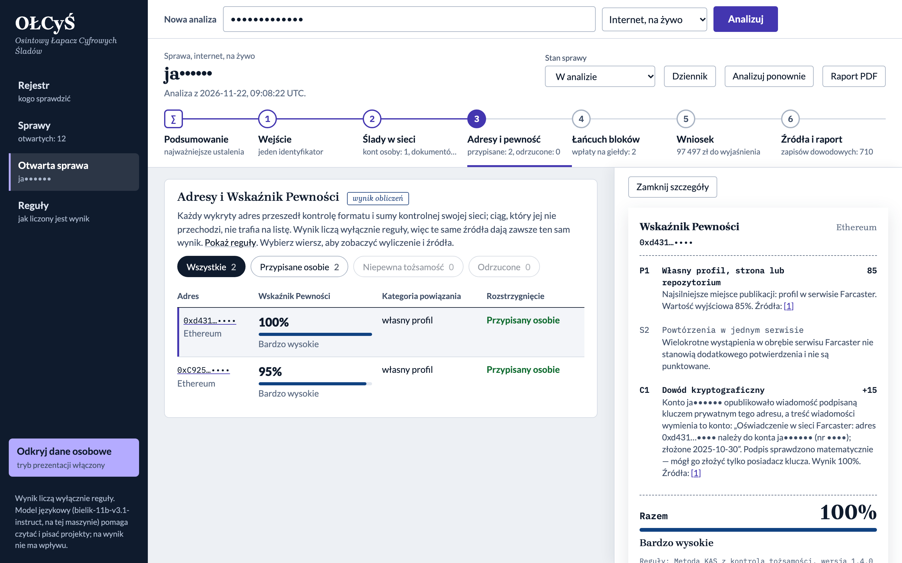
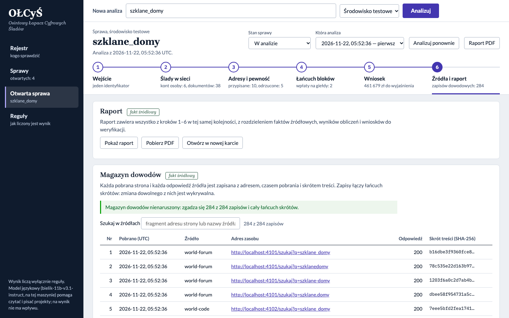

Osintowy Łapacz Cyfrowych Śladów · HackNation 2026 · wyzwanie KAS
Narzędzie OSINT dla analityka KAS. Samo przeszukuje publiczne źródła, łączy ślady z adresami kryptowalut, liczy prawdopodobieństwo każdego powiązania, odrzuca fałszywe trafienia i pokazuje, dokąd trafiły środki.
Adresy portfeli leżą w profilach, ogłoszeniach i na forach. Połączenie ich z osobą i z historią w łańcuchu bloków to dziś godziny ręcznej pracy, której nie da się powtórzyć ani sprawdzić.
Co zmierzyliśmy sami, wyłącznie na danych publicznych
| 3 876 | portfeli, o których giełda Coinbase publicznie poświadcza: „klient zweryfikowany w Polsce” |
| 3 014 | portfeli rejestru z historią w sieci Base |
| 818 | wysłało środki na giełdy: 5 327 wpłat |
| 1,83 mln | w stablecoinach (USDC, USDT, DAI) oraz 520 ETH trafiło na adresy giełd |
Czego brakuje analitykowi


| Reguła | Kiedy adres dostaje 0% |
|---|---|
| X1 | ma publiczną etykietę: giełda, P2P, bramka, kantor, token, mikser, zbiórka, most |
| X2 | pod adresem jest kod wykonywalny (smart kontrakt) |
| X3 | publikują go 3 lub więcej niepowiązanych kont |
| Q1 | występuje tylko w cytacie cudzej wypowiedzi |

Rejestr powstał wyłącznie z danych publicznych, bez logowania i bez obchodzenia zabezpieczeń, i nie opuszcza maszyny.

| 1 nick | na wejściu; 4 konta o tym nicku, 2 podobne konta trzymane osobno jako niepotwierdzone |
| 100% | dwa portfele potwierdzone podpisem, trzeci 95% |
| PL | Coinbase publicznie poświadcza: klient zweryfikowany w Polsce |
| 21 | wpłat na Binance, Bybit i OKX przez rozpoznane adresy depozytowe |
| 287 284 zł | wartość do wyjaśnienia za lata 2024–2026 |
Narzędzie nie wskazuje osoby z imienia. Wskazuje, kto ją zna, i przygotowuje projekt zapytania z dokładnym wykazem wpłat.

brak jakiegokolwiek poświadczenia KYC
| 1 konto | publiczne, które samo dołączyło portfel |
| 100% | portfel podpisał oświadczenie „należę do tego konta”; podpis sprawdziliśmy sami |
| 13 | wpłat na Bybit i MEXC; adresy depozytowe rozpoznane po przepływie środków, bez żadnej etykiety |
| 97 497 zł | wartość do wyjaśnienia; 90 034 zł w samym 2024 r. |
Bez KYC po stronie portfela analiza i tak dochodzi do podmiotu, który zna klienta: giełda przydziela adres depozytowy jednej, zweryfikowanej osobie.


| Kryterium | Waga | Odpowiedź |
|---|---|---|
| Zgodność z wyzwaniem i scenariusz | 25% | Sześć kroków w kolejności scenariusza; wszystkie wymagane identyfikatory; analizy cykliczne z porównaniem; scenariusze testowe na danych syntetycznych i dwa przypadki na danych publicznych. |
| Wskaźnik Pewności i błędne przypisania | 25% | Pasma i premie zgodne z załącznikiem; paragon przy każdym adresie; reguły na jednej stronie, zmienialne i wersjonowane; cztery reguły wykluczeń i limit tożsamości. |
| Raport, źródła, uzasadnienie | 20% | Fakty, obliczenia i wnioski rozdzielone; adres URL, czas i skrót każdego źródła; chronologia przepływów; raport czytelny bez wiedzy informatycznej. |
| Pomysł i oryginalność | 15% | Rejestr 4 500 portfeli; podpisy sprawdzane przez narzędzie; publiczne poświadczenia giełd; adresy depozytowe rozpoznawane po przepływie; rytm doby; twórca kontraktu. |
| Wdrożenie i architektura | 15% | Node.js, React, PostgreSQL, jedno repozytorium; działa lokalnie, bez chmury; lista dozwolonych hostów; model AI lokalny i wymienny jedną zmienną; komponenty wyłącznie Open Source. |
Wynik liczą wyłącznie reguły: te same źródła dają zawsze ten sam wynik. Dane testowe i wyniki nie trafiają do usług zewnętrznych.
10 / 10